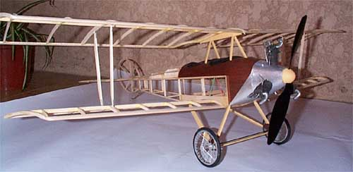
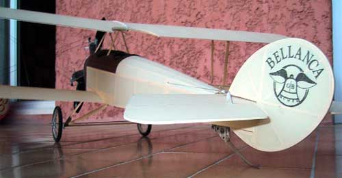
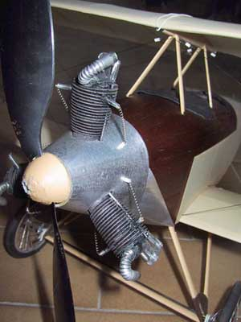
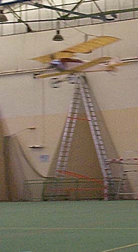

Bellanca Light Tractor by Patrick Dottax

|
Patrick Dottax writes ...
Just a little picture of the already done work... the Engine (an Anzani 35HP radial 3 Cylinders) details comes from different internet pictures... the manzonia wood planking idea comes from a view of the Bellanca CF where the cockpit is similarily planked... Cowl is Soda can aluminium brushed, the engine mainly made with foam (cylinders), carbon rods... the whole fuselage with servos, motor (GWS) Batteries and landing gear is 117 grams... You will see in the cowl parts picture that I made a trap door under the nose for battery installation. |

|
|---|
|
The logo on the tail is based on old pictures. There are many assumptions.
The covering is litespan & balsaloc... really easy. The first flight (April 2001) was OK... no trim needed. The flight is really magic! The pilot with a white scarf is missing... I don't know for your model but mine needs to be "piloted" if I want perfect flight paths... (it's not a machine for beginners) I love this. The other modelers who were in the sport hall where really enthusiastic! Flight speed and behaviour is full of realism. With the 500 mAh LiIon packs (two 3.6 V cells) I fly 45-50 minutes! the GWS motor reduced 7:1 and the GWS 9x4.7 prop was repitched to 5.5 or 6 works very well and cruise speed is obtained just above half the max thrust. I have flown saturday (3 packs: around 2h 30mn) and again sunday... it's a drug! Many thanx Thayer for designing this marvelous machine ! |
|
  
|
|
Thank you Patrick for sharing these photos of your wonderful model.
|
Return to
my original version | Other Versions Index
Copyright 2003, Thayer Syme. All rights reserved